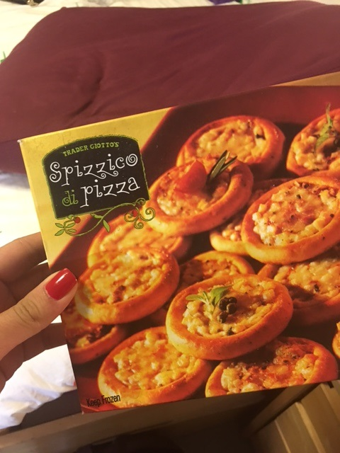
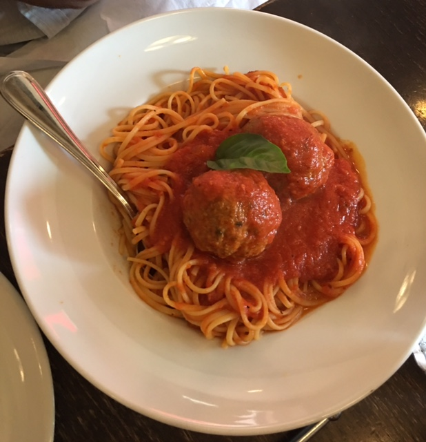

~ Through the Hapa Lens ~
Home Food College
Contact
One thing you should know about me is that I love food. The taste, the smell, and the aesthetics all bring me happiness. WARNING: these photos will probably cause you pain if you're hungry.
LA
Loaded fries from a street fair are always bomb, but when your school celebrates your departure (class of 2016 FTW) and orders a grilled cheese truck... life is a little bit brighter.
9021Pho serves the best pho dishes and French dip bahn mi sandwiches. I went so often that the manager introduced himself to me.
Acai bowls are sooo LA, you can get them practically anywhere - another reason I love my hometown. To the right is a beautiful mango shaved ice dessert. INSANE. Ktown does it best.
Panera serves the most delicious breadbowls. I'm headed straight there when I get a cold! The middle image is a screenshot of a Pinsir pokemon trying to steal my bread - it's just THAT good. Next to the unsuccessful theif is the legendary spinach artichoke dip from The Cheesecake Factory! Take. Me. Back.
BROOKLYN

College. No further explanation needed.

Juuuuust kidding. I eat great food here in NYC! Juliana's Pizza is one of a kind. They even offered me a job a couple visits ago!

The mexican food here in NYC is on POINT. Dos Toros Tequira is the way to gooo for tacos!
Kat LoScalzo | NYU 2020 | IDM |